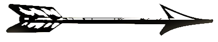

LAMY多色鉛筆比較
LAMY マルチシステムレコーダー
スタンド: 2026 年 2 月 14 日
過去と現在販売されているLAMYの多色鉛筆。
現在販売中のタイプは緑色でマークされています。
| タイプ | 機構 | まだ店頭にありますか？ | 見つけやすいですか？ |
|---|---|---|---|
| M2000 | ビューの選択。 4色ボールペン | そして | そして |
| ツインペン | スピン。ボールペン1本+鉛筆1本 | そして | そして |
| トライペン | スピン。ボールペン2本+鉛筆1本。 以前: ボールペン 1 本 -> マーカー 1 本 |
そして | そして |
| ロゴ | スピン。 3色ボールペン | そして | そして |
| CP1 | ビューの選択。 3色ボールペン | いいえ | そして |
| デザイン20 | ビューの選択。 4色ボールペン | いいえ | いいえ |
| クリップ | スピン。 2色ボールペン | いいえ | いいえ |
| セント | スピン。 2色ボールペン | いいえ | いいえ |
| ツイン（サファリ） | スピン。 2色ボールペンです。 | いいえ | そして |
| フレーム | ロックスリーブスライダー。 4色ボールペン。 | いいえ | いいえ |
複数のバリエーションを持つペンのバリエーション
現在販売中のものは緑色でマークされています。| CP1 | ツインペン | トライペン | ロゴ | クリップ | ツイン（サファリ） |
|---|---|---|---|---|---|
| スタール | スタール (cp1-デザイン) | スタール (cp1-デザイン) | |||
| シュヴァルツ | シュヴァルツ (cp1-デザイン) | シュヴァルツ (cp1-デザイン) | |||
| ホワイト（CP1デザイン） | ホワイト（CP1デザイン） | ||||
| メタリック「ガンメタル」（cp1-Design） | メタリック (cp1-デザイン) | ||||
| ブラックメタリック（CP1デザイン） | ブラックメタリック（CP1デザイン） | ||||
| Ti (チタンベジット) (cp1-デザイン) | Ti (チタンベジット) (cp1-デザイン) | ||||
| シュヴァルツ（ロゴデザイン） | シュヴァルツ | ||||
| シルバーファーベン（ロゴデザイン） | シルバー色 | ||||
| スチール/シルバー色(STデザイン) | スチール/シルバー色(STデザイン) | ||||
| シュヴァルツ (st-デザイン) | |||||
| シュヴァルツ | シュヴァルツ | ||||
| 白 | 白 | ||||
| グレー（キラキラ） (メルセデスベンツ特別仕様車) |
グラウ | ||||
| レッド（スパークリング） (メルセデスベンツ特別仕様車) |
ロットオレンジ | ||||
| ブルー（キラキラ） (メルセデスベンツ特別仕様車) |
ブラウ | ||||
| パープル（キラキラ） (メルセデスベンツ特別仕様車) |
|||||
| グリーン（スパークリング） (メルセデスベンツ特別仕様車) |
|||||
| ゲルブ |
ツインペンの特別版について情報を提供してくださった Twitter ユーザー @Unbeldi_vedremo に感謝します。
インターネット上で多色ペンと呼ばれているペンは次のとおりですが、私は数えていません。

ラミー ピックアップ (2004)、ラミー ピックアップ プロ (2006)。ラミー サファリ ツインペン EMR (2024)。
多色鉛筆の定義はこちらここ私のウェブサイトで。